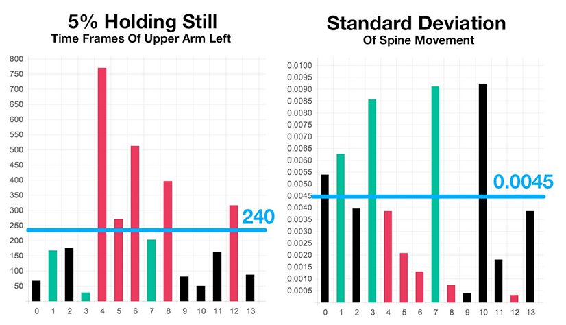

01/2014 - 05/2014
Affective Computing and Human Robot Interaction Project at UCLIC.
Supervised by Nadia Berthouze and Nicolai Marquardt
Affective Interaction, Data Analysis, Machine Learning, Arduino, Processing, Research
The Problem
Chronic pain (CP) patients suffer from physical, psychological, and emotional problems, such as fear of movement and (re)injury, low self-efficacy, the amplification of pain signals in the nervous system, etc [1]. Protective behaviours, such as guarding oneself and avoiding painful movements, are observed in people with CP, which decrease the benefit of physical activity and may lead to loss of mobility.
Technologies are used for addressing this issue. Needs and barriers for CP patients and physiotherapists are analysed to help develop technology to support physical activities [4]. Audio feedback is used for motivating CP patients doing reaching forward exercise [1]. Supervised machine learning is used for automatic recognition of guarding behaviours based on motion capture data[2]. However, there are some hurdles in introducing technology for home rehabilitation, as whole body motion capture suit is unaffordable and difficult to wear by CP patients.
Crowdsourcing Labelling
The motion segments of the reaching forward exercise from [5] were used the data set for this study, which have 19 people with low-back chronic pain (CLBP) doing physical activities while wearing an Inertial Measuring Unit (IMU) whole-body motion capture suit.
The avatar clips of patients doing the reaching forward exercise, which were generated from the BVH data, were segmented. Avatar clips were used due to ethical issues and to eliminate labelling bias from other modalities, such as facial expression. A crowdsourcing platform, CrowdFlower, was used to do the confidence labelling in three categories, high, medium or low confidence.
Self-efficacy is defined as one’s confidence in overcoming barriers to perform a behaviour [8]. It is a more important factor of disability than other factors such as fear of avoidance, movement and (re)injury, for CP patients. As the crowdsourcing platform was used to do the labelling, the word "confidence" is easier to be understood by people. Thus, the affective state, confidence, was chosen.
Example of a LOW confidence avatar clip
Protective behaviour can be seen from this clip, such as avoiding bending and movements.
Example of a HIGH confidence avatar clip
Feature Extraction
Based on literature review and observations on these labelled avatar clips, the following features were analysed: bending spine, bending head, bending knees, bending elbows, azimuthal shoulder rotation, the duration of time leaning forward, duration of arms away from the body, and quantity of movement (vibration).
Based on the above features, the angles between the 13 representative vectors and the horizontal plane were analysed.
Green represents for high confidence group. Black represents for the medium confidence group. Red represents for the low confidence group.
The range of angle is larger for high confidence group, because the low confidence group bend their spine less. Therefore, the range, defined as maximum minus minimum, and mean value, were calculated.
As the movements were more stiff and rigid in low confidence group, there were less movements/vibrations in low confidence group than in other groups. The range, mean and standard deviation of the sequential rate of change, defined as (t(n)-t(n-1))/t(n-1), was calculated.
Based on the above graphs, there were more vibrations in the beginning and the end, due to some adjustment movements, but less during the middle period. Therefore, the range, mean and standard deviation of the rate of change of the middle period was calculated.
The low confidence group tended to have less movements when they held the arms up. Thus, the total number of frames when the arms were held up was calculated as indicator for amount of movement.
Feature Modelling
Classification algorithms, such as Naïve Bayes, SVM, J48, k-NN, RR, KRR, SVR, KSVR, MLP and Random Forest (RF), have been evaluated for automatic recognition of affective states [7][3]. In these two studies, Random Forest [6] achieved high performance, as it is suitable for high dimensional data input and variable importance can be calculated from out-of-bag (OOB). Thus, random forest was used in this study to classify “High, Medium, Low” of confidence behaviour. Using the leave one subject out cross validation, the model was trained using 13 sets of data, and was tested on the remaining 1 dataset. The procedure was repeated for 14 times to evaluate the performance.
Feature Selection
182 features, 14 variables for 13 vectors, were calculated. Using the above method, features were analysed in two steps. Firstly, vectors were kept the same, variables were changed to find more reliable variables based on the accuracy and the estimated OOB feature importance figure. Secondly, variables were kept the same, vectors were changed to find more reliable body parts to position sensors.
For variables on the back, the range and mean value of hip-spine and spine-neck bending, and the quantity of movement features were more reliable. For variables on the arms, the feature of detaching lack of movement while holding upper arms up was better than that of the lower arms. Vibration feature on the right upper arm can be detected. For variables on the shoulder, range and standard deviation of rate of change has higher importance.
Selected Features
The following features are significant: (1) more bending of spine in high confidence group, (2) more spine movements in high confidence group, (3) low confidence group lacked of movement while holding upper arms up.
Other interesting features are (1) low confidence group would lean the shoulder towards one side more than high confidence group, (2) more shakings (vibrations / movements) on legs in high confidence group.
Positioning of Accelerometers
The performance of combining selected features and numbers of accelerometers were analysed. Combining more features and adding more accelerometers would increase the accuracy, but it would be more difficult to wear for CP patients. Thus, only one accelerometer was placed at a time: 1) positioning one accelerometer on the upper back of the body; 2) positioning one accelerometer on upper arm.
Getting Data From Accelerometer
An Engduino board was used, which is based on an Arduino LilyPad with a 3D accelerometer on it. Although it is impossible to get the XYZ position value from an accelerometer, it can output the acceleration values in the direction of the three XYZ axis, due to gravity. Accelerometers can also be used as inclinometers. The pitch and roll value can be calculated. As the accelerometer would be sticked vertically to body parts, both the roll value could be simulated as the angle of the bending of the body part with the horizontal plane.
Motivation Strategy 1
The first motivation strategy was designed for the reaching forward exercise. As showed in the above video demo, the device was placed on the user's back. The user would be asked to set his minimum and the maximum position via an external button. A confidence level was set automatically based on the data analysis results. A sound wave would be generated while the user reaching forward, to motivate the patient to do the exercise. The pitch rises while the participant reaching forward over the threshold, and it goes down before they reaches the maximum position. When the user reached over the confidence level, the sound would be generated faster, to make patients feel easier to do a little more. It increased patients’ self perception and also effectively prevented overactive movements.
Motivation Strategy 2
The second motivation strategy is that the device would generate random pitches based on the amount of patient’s movement to motivate non-intrusive movement. The amount of movement is evaluated by the standard deviation of the range of change. The immediate sound feedback would indicate to patients they are doing exercise, and give them a sense of achievement. The sound would harder to trigger after a period, to address on the steady increment requirement and to motivate patients to do more. CP patients can also wear the device on arms while doing housework. The device would give slight sound feedback based on the quantity of arm movements. In this way, technology and physical activity can be incorporated into their daily life, which helps to ease the fear of doing exercise, to maintain gains in capability, and to do exercise in a more non-intrusive way.
01/2014 - 05/2014
Affective Computing and Human Robot Interaction Project at UCLIC.
Supervised by Nadia Berthouze and Nicolai Marquardt
Affective Interaction, Data Analysis, Machine Learning, Arduino, Processing, Research
[1] Singh, A., Klapper, A., Jia, J., Fidalgo, A., Jimenez, A., Kanakam, N., Bianchi-Berthouze, N. and Williams, A. (2014). Motivating People with Chronic Pain to do Physical Activity: Opportunities for Technology Design. CHI’14, April 28 -May 1, 2014, Toronto, Canada
[2] Aung, M. S. H., Bianchi-Berthouze, N., Watson, P. and Williams, A C de C. (2014). Automatic Recognition of Fear-Avoidance behavior in Chronic Pain Physical Rehabilitation. 8th International Conference on Pervasive Computing Technologies for Healthcare, May 20–23, 2014, Oldenburg, Germany
[3] Griffin, H. J., Aung, M. S. H., Romera-Paredes, B., McLoughlin, C., McKeown, G., Curran, W. and Bianchi-Berthouze, N. (2014). Laughter Type Recognition from Whole Body Motion. 2013 Humaine Association Conference on Affective Computing and Intelligent Interaction
[4] Swann-Sternberg, T., Singh, A., Bianchi-Berthouze, N. and Williams, A. C.de.C. (2012). User Needs for Technology Supporting Physical Activity in Chronic Pain. CHI’12, May 5–10, 2012, Austin, Texas, USA
[5] Cella, M., Aung, M.S.H, Meng, H., Bianchi-Berthouze, N., Romera-Paredes, B., Singh, A., Shafizadehkenari, M., Williams, A. C.de.C, Watson, P., Kemp, A., Brooks, S., Kaltwang, S., and Valstar, M. (2012). Identifying Pain Behaviour for Automatic Recognition. 14th World Congress on Pain
[6] Breiman, L. (2001). Random Forests. Machine Learning, Vol.45, No.1, pp.5-32, 2001
[7] Gjoreski, H., Luštrek, M. and Gams, M. (2011). Accelerometer Placement for Posture Recognition and Fall Detection. 2011 Seventh International Conference on Intelligent Environments
[8] Bandura, A. (1977) Self-efficacy: toward a unifying theory of behavioral change. Psychol Rev 1977;84:191–215